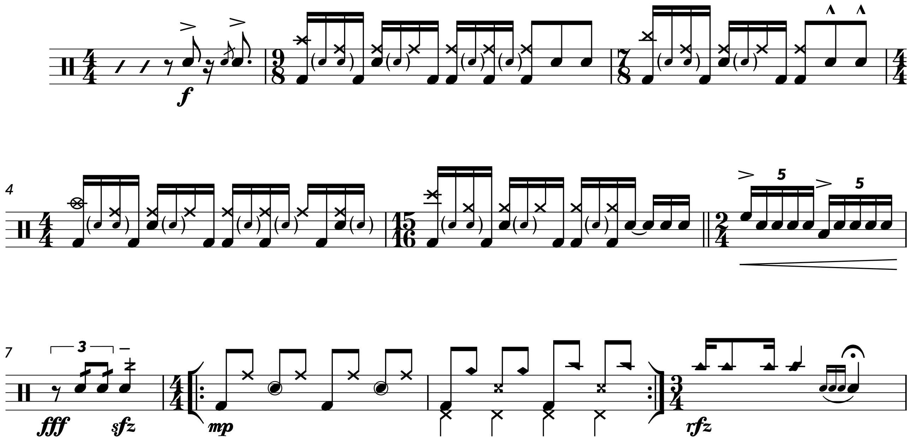

MuseScore 3.6 Released

I wanted to make a short post discussing my notation software of choice, MuseScore, since a somewhat significant update just came out at the end of last week. The MuseScore team calls it an “engraving” release, adding some neat features such as default indenting on scores (which I previously always did with a spacer), in addition to a feature that will organize instruments on a conductor score (using templates such as “Orchestra” or “Jazz Band”). Perhaps most significantly, a new music font was added, “Leland”.
Music fonts change the appearance of the actual music on the paper, and for a long time, MuseScore users (like myself) looked to Finale and Sibelius with a bit of envy, as these programs have many options for music fonts. When I started using MuseScore (ver 1.3), there were only three fonts available: Emmentaler, which is the same font Lilypond uses, presumably inspired by an unknown publisher; Bravura, a font created for Dorico that takes its inspiration from Sonata, the world’s oldest music font (commissioned by Adobe in 1985 to work with the PostScript langauge); and Gonville, built by software developer Ian Jackson, and based off of Emmentaler.
After 5 years of discussion, MuseScore finally implemented a lead-sheet style font in 2018 called MuseJazz, which until now was the only music font update. The developers have explained that music fonts must be built into MuseScore to be used, meaning that they have to be extensively modified to work with the software, in addition to having the appropriate license. So most of these third party fonts can’t be used with the software.
Leland is meant to be MuseScore’s new default. It takes its inspiration from SCORE, an increasingly obscure scorewriter created by Leland Smith in the 80’s — it actually predates Finale by one year, and it apparently was the first scorewriter to get any professional use (which continued well into the 21st century). However, Smith seems to have made the decision that when he would die, SCORE would die with him; he passed away in December of 2013 and SCORE hasn’t been updated since. The website is defunct and software has basically been deserted by its developers.
Smith spent a lot of time investigating how real engraving works (i.e. talking to the poor folks who carve notation backwards into metal), so the program quickly became esteemed for its output. MuseScore head of design Martin Keary worked with professional engraver Simon Smith (a long time SCORE user) to build the new font. Here’s a random ditty I cooked up to show off the new update, with my usual cleanups:
At first glance, I really like the look of the time signatures, dynamics, and accents. I have mixed feelings about the the parentheses I use for ghost notes; while they look a little too small and are hard to catch, I do think they have a very efficient use of space. Moreover, I find several elements to be just too thin — I feel like the X noteheads get drowned out by the normal noteheads, and the china cymbal notehead looks a bit small too. Interestingly, the developers sepcifically said that they wanted to avoid making the font look thin and unsubstantial. I have the same issue with most of the rests... there’s just something off about the rests for eight notes and up. They look thin and wispy. Perhaps they look better when printed, but I’m under the impression that this was made with a digital focus.
Meanwhile, the “marcato” accents look a bit too wide for me. There’s also something funny going with the flags. I notice it most with the flam grace note (acciaccatura). I usally push the grace note closer to the anchor note becuase it looks better, but with Leland the grace note’s flag gets way too close to the anchor notehead. The flags are also much too close to augmentation dots. And lastly, my tambourine notehead in the 3/4 bar looks almost indentical to my ride bell notehead in the measure before. Here’s the same excerpt with Emmentaler and my typefaces:
I think I’ll stick with Emmentaler for now. I’m very tempted to switch (mainly because of the ghost notes), but I think there’re just too many problems with it. I do admire the work that went into this; the more of these fonts MuseScore has, the better. They can go a long way to give a score some personality. I suppose I could use the symbols pallet to combine the parts I like from Leland with Emmentaler... but that would be very tedious and time consuming. And as a MuseScore user, that’s really saying something!
I still have to make some routine adjustments to ensure that the score looks good: adding space to ghost note parentheses, pushing flams closer to main notes, fixing weird stem lengths, and fixing tuplet brackets with crazy slopes (sadly, there’s still no way to force horizontal on tuplets brackets). I guess I’ll have to hold out for MuseScore 4 to see these fixed (if they ever do get fixed).
Lastly, the team added a new default typeface called “Edwin”, based on New Century Schoolbook. Since I labored over what typface would look good on my site as well as my scores (not to mention the all typefaces I found for tuplets and the like), I’m not sure if and when I’ll be using Edwin. It does look nice for chord symbols, so I’m tempted to replace Bitstream Charter, my current chord symbol typeface. I must say that the bold font is way too heavy however, so I have some thinking to do...
Posted on January 20, 2021